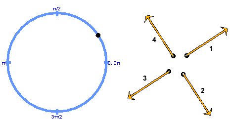

Suppose a particle is moving at constant speed in a circle.
The following diagram shows the particle's path with the particle indicated by a black dot. Which one of the four vectors indicated by a number in the diagram best represents the particle's acceleration when the particle is in the position shown?
